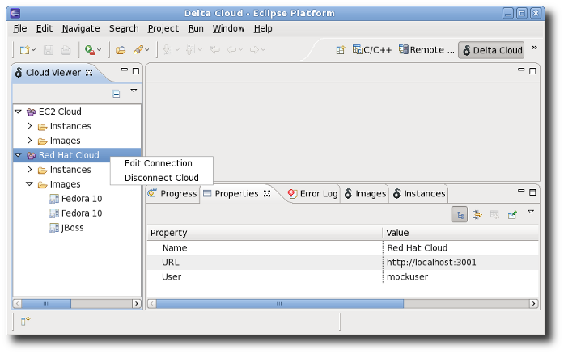
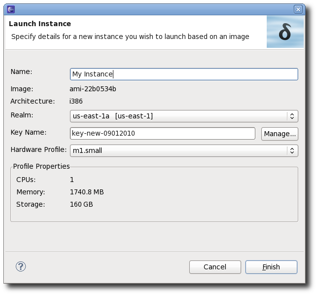
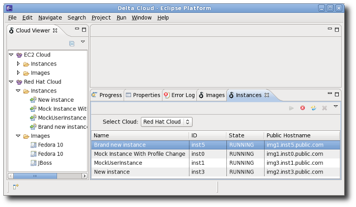
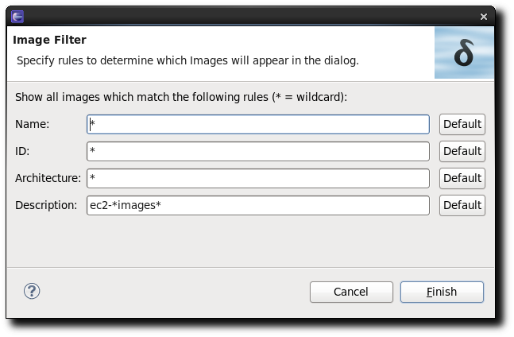
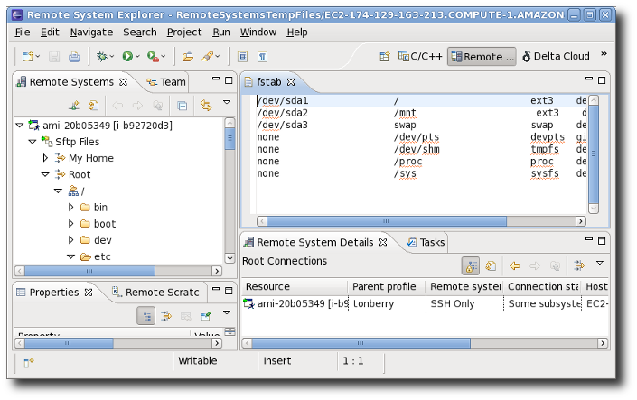
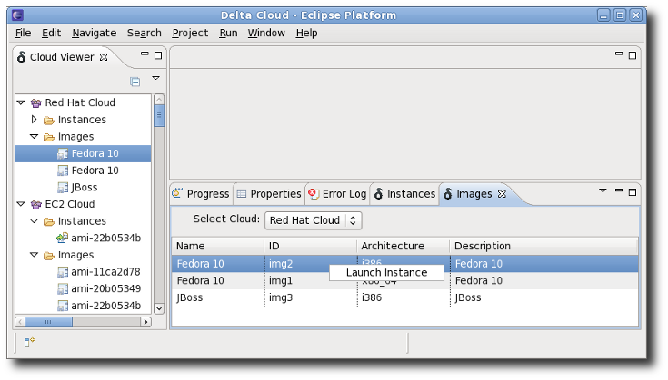
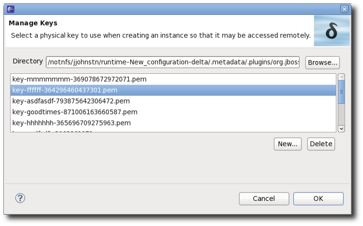
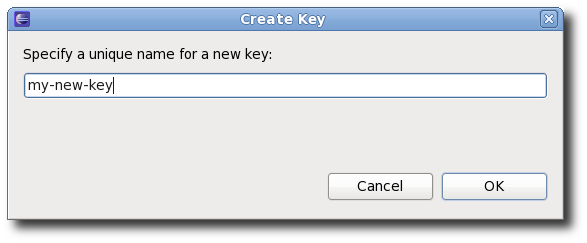

The DeltaCloud Tools provides a set of Eclipse plug-ins to manage clouds via one or more DeltaCloud servers. The plug-ins use a REST interface to communicate with the DeltaCloud server which in turn communicates with a remote cloud.
Each DeltaCloud server is started outside of Eclipse via the deltacloudd command and specifies the type of cloud it is accessing and the port one must communicate with. For example,
will start a server that will talk to an Amazon EC2 cloud and is accessed via port 3002 on the localhost. By default, the DeltaCloud server will listen on port 3001. It should be noted that the DeltaCloud server does not support ssh encryption so it is recommended that the server be run on the localhost or else behind a proxy such as is described here. This is recommended due to the fact that a userid and password is communicated with the server for accessing the cloud.
Under Eclipse, the DeltaCloud Tools has its own perspective which includes 4 views which will be discussed in more detail later:
Each view may be brought directly via
To start accessing a cloud from Eclipse, select
This brings up the Cloud Connection dialog:
The following fields are described:
When the URL, username, and password fields are filled in appropriately, you may press the Test button to verify if the values are valid for accessing the cloud.
After all fields are filled in and the URL is valid, the Finish button can be pressed to complete the creation process.
The values can be edited in the future if necessary from the Cloud View and this described later in this document. Editing the connection is useful if the password was misentered or one wishes to use a different username/password combination or the server URL changes. The connection is stored securely across an Eclipse session so reentering the data is not required if using an equivalent server instantiation (i.e. cloud type and URL are the same).
The Cloud Viewer shows the various cloud connections created in a Tree view format. Cloud connections have Instances and Images as children. The following shows an example of the Cloud View with two connections:
This example also demonstrates the Properties View. The Properties viewer will show properties details for any object selected in the Cloud Viewer. In this particular instance, it is showing the properties of the cloud connection named "Red Hat Cloud". Note that the properties are read-only in the viewer. If instead an Instance or Image is selected in the tree view, appropriate details are provided for the Instance or Image specified.
If a Cloud Connection is selected and right-clicked, a menu pops up that allows one to "Edit Connection" or to "Disconnect Cloud". Both actions are obvious. The Edit Connection menu-item brings up the Cloud Connection Dialog with all the current values filled in (including password hidden from view). When the edit is complete, selecting Finish changes the values. To abort, select Cancel.
An Instance is a running system based upon an Image. One way to think about this is that an Image is a template whereas an Instance is an instantiation of the template. To launch an Instance, open up the tree view such that the desired Image to base upon is shown. Select the Image and right-click on it. This will bring up a popup menu which includes "Launch Instance". Clicking on this menu item causes the Launch Instance dialog to appear.
The dialog contains a number of fields to fill in:
Once the dialog is filled in, select Finish to complete the creation of the Instance. A confirmation dialog is brought up to ensure the user wants to launch the Instance and perhaps start paying money. This confirmation dialog has the option of never showing again and this can be modified later in the DeltaCloud preferences found via
The Instances View shows all Instances for a specified Cloud Connection in a Table view format. Each row has columns detailing a separate Instance for the Cloud. The following shows the view:
At the top of the Instances View is a selector for the Cloud Connection. This will contain the list of known Cloud connections shown in the Cloud Viewer.
The Instances View table contains:
For each Instance (row) selected, right-clicking brings up a set of available actions. Actions are available only if pertinent to the current state of the Instance. The actions include:
The Start, Stop, Reboot, and Destroy actions are also available directly from the tool-bar of the view. Actions that are not applicable for the currently selected Instance are likewise disabled as they are when right-clicking.
Actions requiring time may bring up a Progress Dialog which can be moved to the Background. If the Progress Dialog is desired to be in the Foreground again, this can be achieved by accessing the preference found at:
If a large number of Instances exist, the list can be filtered to only include those of interest. Filtering can be accomplished either by right-clicking in the Cloud Viewer and selecting "Filter Instances..." or by using the pull-down menu in the Instances View and selecting "Filter...". This brings up the following dialog:
The filter allows specification of matcher patterns for the fields:
All filtering fields allow specification of wildcards (e.g. ami* will match all strings starting with ami). Filters are saved across sessions and are per cloud. By default, all filtering fields are initially set to "*" meaning "all possible values". If any filter field is not "*", a "filtered" label will appear on the right side of the Instances view to signify that not all available Instances are being shown in the view.
The Remote System Explorer perspective can be accessed by going to
The Eclipse RSE perspective allows one to access files on the remote Instance and to modify them, if desired. The following image shows a remote file being accessed: 
Note how the file system can be accessed via the Sftp Files node in the Remote Systems tree view. In this example, the remote fstab file has been selected and shows in the editor. It can be edited and saved just as if it was a local file.
For more details on Remote System Explorer, see here or consult
The Images View is similiar to the Instances View in that it is a Table view of the Images of a particular Cloud connection. Each row details information about an Image in the Cloud. The following demonstrates:
Like the Instances View, the Cloud connection to use is specified by the Select Cloud drop-down. For a selected Image (row), right-clicking allows one to Launch Instance. This is identical to performing the action from the Cloud Viewer and this brings up the Launch Instance dialog.
Each row contains details about the Images including:
If a large number of Images exist, the list can be filtered to only include those of interest just as with Instances. Filtering can be accomplished either by right-clicking in the Cloud Viewer and selecting "Filter Images..." or by using the pull-down menu in the Images View and selecting "Filter...". This brings up the following dialog:
The filter allows specification of matcher patterns for the fields:
As with the Instance filter, all filtering fields allow specification of the "*" wildcard. Image filters are saved across sessions and are per cloud. By default, all filtering fields are initially set to "*" meaning "all possible values". If any filter field is not "*", a "filtered" label will appear on the right side of the Images view to signify that not all available Images are being shown in the view.
The Manage Keys dialog is accessed via the Launch Instance dialog. This dialog allows one to Create and Delete key files as well as to select which key to use for the current Instance launch.
The Directory field is where key files are stored. To select a different directory, click on the Browse... button.
To create a key, hit the "New..." button. This brings up a simple dialog:
where the key name is entered. The name must be unique for the Cloud (i.e. not just the directory). When OK is pressed, the key file will be created in the specified directory chosen for the Manage Keys dialog.
From there, a key file may be selected. If OK is pressed, the name of the file (minus the extension) is the key name used for the Launch Instance dialog. Alternatively, the selected key may be deleted by pressing the Delete button. A confirmation dialog will appear in this case to confirm or cancel the deletion. Deleting a key removes it from the Cloud and the name may be reused later.